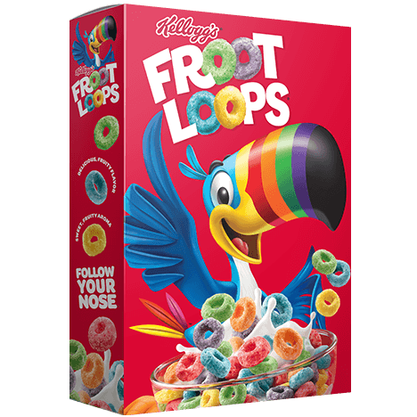

Looped Cereal Examples
The first and most popular Cereal to ever exist, none other than Cheerios. Originally founded as way to shake up the depression-era landscape of breakfast in a cheap and more entertaining way than foods such as oatmeal.
The second cereal, Froot Loops are a fun 1963 variety of cereal. With larger rings than cheerios, the colorful shapes are a stape of childhood.
The third and final looped cereal example is Apple Jacks, a large ringed cinnamon and apple cereal, it was originally invented in 1965 as Apple O's, they were renamed in 1971.
